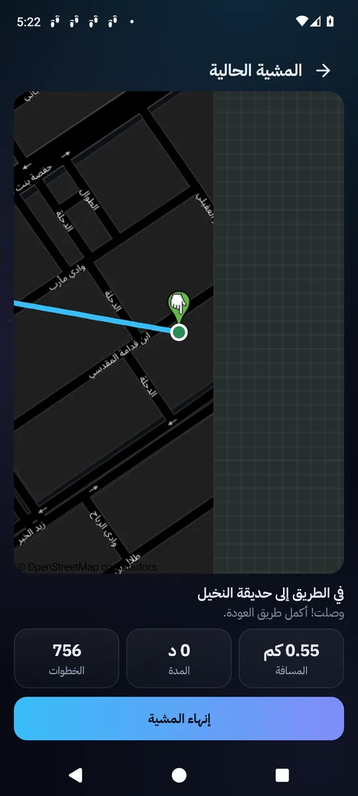
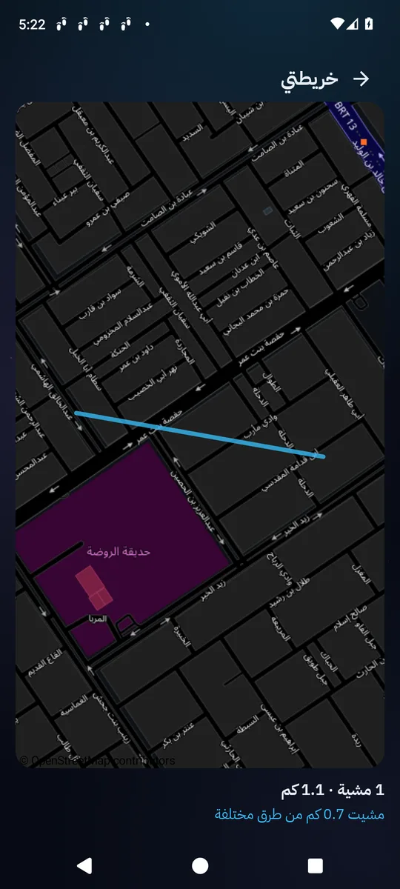
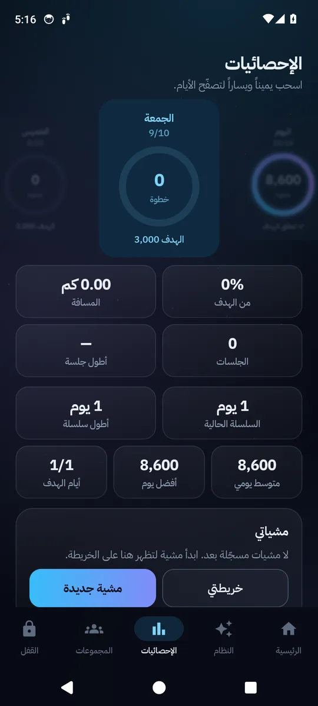
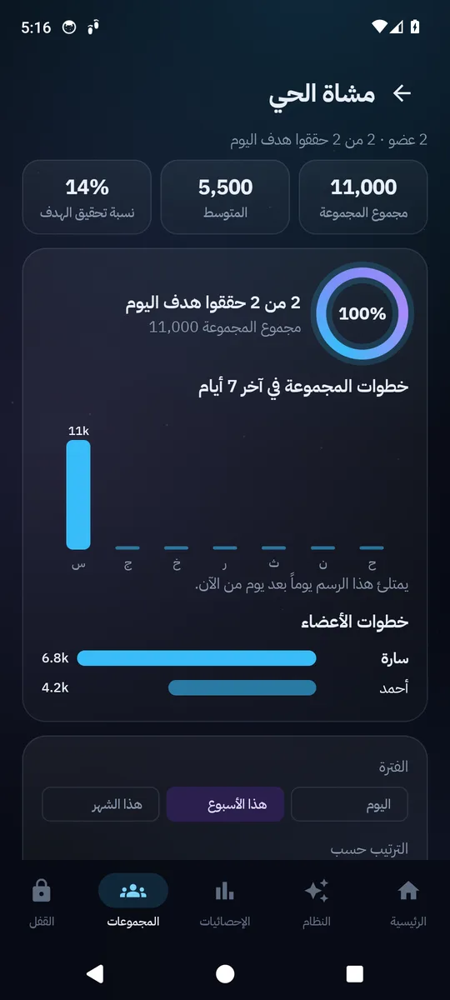

جوالك يصير سبباً لتمشي، لا عذراً لتجلس
يعمل بلا إنترنت وبلا حساب. التحدي اليومي والخرائط فقط تحتاج إنترنت، والحساب اختياري.
قفل حتى تمشي
اختر عدد الخطوات واقفل الجوال، فيُفتح تلقائياً حين تمشيها. مع قفل مجدول وتطبيقات مسموحة، وتأكيد يمنع القفل بلمسة خاطئة.
شعلة الاستمرارية
تكبر مع كل يوم تكمل فيه مهمتك، وتتغير عبر سبع مراحل حتى العنقاء بعد 365 يوماً.
تحدي اليوم
مكان قريب للمشي بالمسافة التي تكمل هدفك، في أنسب وقت حسب الطقس ومواقيت الصلاة. لمدن السعودية.
مشياتي وخريطتي
كل مشية بمسارها ومسافتها ومدتها، وخريطة لكل الطرق التي مشيتها وكم كيلومتراً من الشوارع اكتشفت.
برنامج رياضي منزلي
ستة أشهر بلا أدوات، 77 تمريناً من الأسهل إلى الأصعب، يتقدّم تلقائياً حسب تقييمك لكل تمرين.
مجموعات (اختياري)
تنافس مع أصدقائك برمز دعوة: منصة لأول ثلاثة ولوحة صدارة لليوم والأسبوع والشهر.
المشي كلعبة
تبويب «النظام» يعطيك مهمة كل يوم: هدف خطوات، وتمرين اليوم، وتحدي الخريطة كمكافأة.
- خبرة ومستوياتمن الرتبة E إلى S، ونافذة حالة بأربع قيم من نشاطك الحقيقي: اللياقة، التحمّل، الاستكشاف، الانضباط.
- رسائل النظامتذكر الحقيقة بالأرقام أولاً، ثم المطلوب منك الآن، بنبرة تتغير حسب ما تستحق.
- عقوبة لها معنىإن فاتتك المهمة يُقفل الجوال صباح اليوم التالي حتى تمشي الخطوات الناقصة. يُسامَح يوم كل أسبوع، ويمكن إيقافها.
شاشات التطبيق




التثبيت والإعداد
- حمّل الملف وافتحهإن طُلب «السماح بالتثبيت من هذا المصدر» فاسمح به. إن حجبه Play Protect اختر «التثبيت على أي حال».
- اتبع شاشات الترحيبتشرح كل صلاحية قبل طلبها. اختر مدينتك واكتب طولك لحساب المسافة.
- فعّل القفلالتطبيق يرشدك لتفعيل خدمة الإتاحة والعرض فوق التطبيقات. على أندرويد 13 فأحدث اسمح أولاً بـ«الإعدادات المقيّدة» من معلومات التطبيق.
- على سامسونجإعدادات التطبيق ← البطارية ← «غير مقيّد»، حتى لا يتوقف العدّ.
أسئلة شائعة
هل التطبيق مجاني؟
نعم.
القفل لا يعمل؟
في تبويب القفل، تحت تنبيه «القفل لا يعمل»، اضغط «كيف أفعّله؟» واتبع الخطوات. أو راجع الإعدادات ← حالة الصلاحيات.
الخطوات لا تُعدّ؟
الجوال يجب أن يكون معك أثناء المشي. راجع حالة الصلاحيات وقيود البطارية على سامسونج.
ماذا لو احتجت جوالي في طارئ؟
في شاشة القفل زر للطوارئ: انتظار ثم كتابة جملة. يُسجَّل «استسلاماً» وله عواقب في اللعبة (خصم من الخبرة، وانتظار يطول، والشعلة تصير رماداً)، ويمكن استعادة نصف الخصم بمهمة تكفير.
ماذا عن الخصوصية؟
مساراتك تبقى على جوالك وفي نسختك الخاصة فقط، ولا تظهر للمجموعات أبداً. الطقس يُطلب لمركز مدينتك لا لموقعك. المجموعات مطفأة حتى تفعّلها، وعندها تُرسل اسمك المستعار وأرقام خطواتك فقط.
نقلت إلى جوال جديد؟
مع حساب: سجّل الدخول فتعود بياناتك ومجموعاتك. بلا حساب: الإعدادات ← النسخة الاحتياطية ← تصدير، ثم استيراد في الجوال الجديد.
استشر طبيباً قبل البدء بالبرنامج الرياضي، خاصة مع وزن مرتفع أو ألم في المفاصل أو مشكلة في القلب أو الضغط.